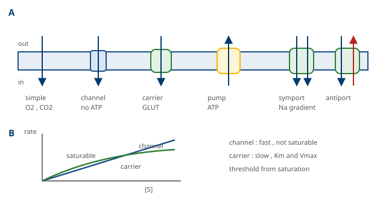

M01-W10-L03 · 인체일반생물학과 기초세포생물학
원형질막과 막수송
The Plasma Membrane and Membrane Transport
학습목표
- 유동 모자이크 모형의 내용을 쓰고 그것을 지지한 실험적 근거를 든다.
- 막의 유동성을 정하는 요소를 네 가지 들고 cholesterol의 양면적 작용을 설명한다.
- 막 지질의 비대칭 분포가 어떻게 유지되는지와 그 붕괴가 신호가 되는 예를 설명한다.
- 막단백질을 막과의 결합 방식으로 분류하고 각 부류를 분리하는 방법을 연결한다.
- 수동 수송과 능동 수송을 구분하고 통로와 운반체의 동역학적 차이를 설명한다.
- Na⁺/K⁺-ATPase의 작동 주기와 그것이 만드는 기울기의 쓰임을 설명한다.
- 이차 능동 수송의 원리를 쓰고 공수송과 역수송의 예를 조직과 함께 든다.
- 삼투압과 세포 부피 조절의 관계를 설명하고 임상적 수액 선택의 근거를 밝힌다.
- 이온 통로의 선택성과 개폐 방식을 구분하고 막전위가 만들어지는 과정을 설명한다.
- 수송체와 통로의 결손이 만드는 질환을 수송의 종류별로 분류해 설명한다.
선수지식
- M01-W05-L02 생체분자와 막의 구조 — 인지질의 amphipathic 성질, 이중층의 형성, 막단백질의 배치
- M01-W09-L02 생체에너지: 자유에너지와 ATP — ΔG와 짝반응, 전기화학적 기울기
- M01-W09-L01 단백질 표적화와 소포 수송 — 막단백질이 소포체에서 삽입되고 배향이 유지되는 과정
- M01-W10-L02 세포골격과 세포 운동 — 막 아래 골격과 막의 연결
강의 구성
- 1. 유동 모자이크 모형과 그 근거
- 2. 막의 유동성과 지질 조성
- 3. 막의 비대칭과 그 유지
- 4. 막단백질의 분류와 분리
- 5. 수송의 분류 — 무엇이 에너지를 요구하는가
- 6. Na⁺/K⁺-ATPase와 기울기의 경제
- 7. 이차 능동 수송 — 기울기를 되쓰는 방식
- 8. 물의 이동과 세포 부피
- 9. 이온 통로와 막전위
- 10. 수송체와 통로의 질환
- 11. 연결
1. 유동 모자이크 모형과 그 근거
원형질막은 세포의 경계이면서 세포가 환경과 주고받는 모든 일이 지나는 곳이다. 1972년 Singer와 Nicolson이 정리한 유동 모자이크 모형(fluid mosaic model)이 지금도 이 구조를 기술하는 틀이다. 내용은 두 문장으로 요약된다. 막은 인지질 이중층이고, 단백질이 그 안에 박히거나 표면에 붙어 모자이크처럼 흩어져 있다. 그리고 지질과 단백질이 막 평면 안에서 움직인다.
모형의 각 부분이 어떤 근거로 세워졌는지를 짚어 두면 모형을 외우지 않고 이해할 수 있다.
- 이중층이라는 점: 적혈구에서 추출한 지질의 양이 세포 표면적의 두 배에 해당하는 단층을 만들 수 있다는 측정, 그리고 막의 전기용량이 지질 두 층 두께에 해당한다는 측정이 근거였다.
- 단백질이 막을 관통한다는 점: 막을 두 층으로 쪼개어 각 면을 관찰하는 freeze-fracture 전자 현미경에서 쪼개진 면에 입자가 박혀 있었다. 표면에 붙어 있을 뿐이라면 보이지 않아야 했다.
- 지질이 움직인다는 점: 형광 표지한 지질의 확산을 측정하면 한 분자가 1초에 수 μm를 이동한다. 작은 세포라면 1초 안에 세포를 한 바퀴 돌 수 있는 속도다.
- 단백질도 움직인다는 점: 서로 다른 생물의 세포를 융합시킨 뒤 각 생물의 막단백질을 다른 표지로 염색하면, 처음에는 두 영역으로 나뉘어 있던 표지가 시간이 지나며 섞였다.
모형이 세워진 뒤에 수정된 부분도 있다. 움직임이 자유롭지 않다. 단백질의 확산 속도는 지질보다 수십에서 수백 배 느리고, 일부는 거의 움직이지 않는다. 이유가 세 가지다. 세포 안쪽에서 세포골격에 묶여 있고, 세포 밖에서 기질이나 이웃 세포에 붙어 있으며, 막 자체가 균일하지 않아 특정 지질과 단백질이 모인 작은 구역이 존재한다. 따라서 지금의 그림은 "유동적이지만 구획된 모자이크"에 가깝다.
막의 두께는 약 5~8 nm로, 광학 현미경의 해상도보다 훨씬 작다. 그래서 막의 구조에 대한 지식은 전자 현미경, 전기 측정, 생화학적 분획, 그리고 최근의 구조 생물학이 합쳐져 만들어졌다. 하나의 방법만으로는 결론이 나지 않았다는 점이 이 분야의 역사에서 반복되며, 아래에서 모형의 각 부분이 서로 다른 방법으로 뒷받침된 것도 그 때문이다.
2. 막의 유동성과 지질 조성
유동성은 추상적인 성질이 아니라 온도에 따라 상이 바뀌는 물리적 성질이다. 온도를 내리면 지질의 꼬리가 정렬해 굳고(gel 상태), 올리면 흐트러져 유동적이 된다(liquid-disordered 상태). 전환이 일어나는 온도를 phase transition temperature라 하며, 지질의 종류가 그 값을 정한다.
유동성을 정하는 요소는 네 가지다.
| 요소 | 유동성에 미치는 영향 | 이유 |
|---|---|---|
| 꼬리의 길이 | 길수록 덜 유동적 | 꼬리끼리의 van der Waals 상호작용이 늘어난다 |
| 불포화 결합 | 많을수록 더 유동적 | cis 이중결합이 꺾임을 만들어 밀착을 방해한다 |
| 온도 | 높을수록 더 유동적 | 열운동이 커진다 |
| Cholesterol | 양면적이다 | 아래에서 설명한다 |
Cholesterol의 작용이 양면적이라는 점이 자주 혼동되는 지점이다. Cholesterol은 평평하고 단단한 고리 구조를 가지며, 인지질 사이에 끼어 들어가 머리 쪽에 가까운 꼬리 부분을 붙잡는다. 그 결과 이 전이 온도보다 높은 온도에서는 지질의 운동을 제약해 유동성을 낮추고, 전이 온도보다 낮은 온도에서는 지질이 정렬해 굳는 것을 방해해 유동성을 높인다. 즉 cholesterol은 유동성을 한 방향으로 바꾸는 것이 아니라 온도에 따른 변화를 완충해 막을 일정한 상태로 유지한다. 이 역할을 가리켜 유동성 완충제라 한다. 동시에 cholesterol은 막을 더 치밀하게 만들어 작은 분자와 이온의 투과를 줄인다.
막 지질의 종류도 정리해 둔다. Phosphoglyceride(phosphatidylcholine, phosphatidylethanolamine, phosphatidylserine, phosphatidylinositol)가 대부분을 차지하고, sphingolipid(sphingomyelin, 당지질)와 cholesterol이 더해진다. 비율은 세포와 소기관마다 다르다. 원형질막은 cholesterol과 sphingolipid가 많아 치밀하고, 소포체 막은 둘이 적어 더 유동적이며 새 단백질이 삽입되기 쉽다. 막의 조성이 그 막이 하는 일에 맞추어져 있다.
막 지질의 조성이 고정되어 있지 않다는 점도 알아 둔다. 식이에서 섭취한 지방산의 종류가 막 인지질의 꼬리 조성에 반영되고, 세포는 온도와 스트레스에 따라 조성을 조정한다. 또 같은 세포라도 소기관마다, 그리고 극성 세포에서는 두 면마다 조성이 다르다. 이 차이는 수송과 신호에 영향을 준다. 막에 박힌 단백질의 거동이 주변 지질의 두께와 유동성에 따라 달라지고, 앞으로 볼 phosphoinositide처럼 특정 지질이 단백질에 직접 결합해 기능을 조절하기도 한다. 막은 단백질이 박혀 있는 배경이 아니라 그 자체가 조절 가능한 매개 변수다.
Sphingolipid와 cholesterol이 모여 주변보다 더 치밀한 상태를 이루는 작은 구역을 지질 뗏목(lipid raft)이라 한다. 특정 막단백질, 특히 GPI anchor로 붙은 단백질과 일부 수용체가 이 구역에 모이므로, 뗏목은 신호 분자를 한자리에 모아 상호작용을 돕는 장치로 해석된다. 다만 살아 있는 세포에서 뗏목의 크기와 수명을 직접 측정하기 어려워, 그 생리적 중요성의 범위는 여전히 논의 중이다.
지질 조성이 질환과 직접 연결되는 예도 있다. 폐의 표면활성제는 phosphatidylcholine이 주성분인 지질 혼합물이고, 미숙아에서 그 생산이 부족하면 표면장력을 낮추지 못해 폐포가 들러붙는 신생아 호흡곤란증후군이 된다. 치료가 외부에서 표면활성제를 투여하는 것이라는 점에서, 지질 자체가 약이 되는 드문 경우다. 또 adrenoleukodystrophy와 Zellweger 증후군에서 plasmalogen이 줄어드는 것이 수초의 이상과 연결된다는 해석이 있고, 일부 유전성 신경 질환에서 특정 인지질 합성 효소의 결손이 원인으로 보고되었다. 막을 구조적 배경으로만 보지 않는 관점이 필요한 이유다.
3. 막의 비대칭과 그 유지
막의 두 층은 조성이 다르다. 사람 적혈구에서 측정된 분포가 전형적이다.
| 지질 | 주로 있는 층 |
|---|---|
| Phosphatidylcholine, sphingomyelin | 세포 밖 층 |
| Phosphatidylethanolamine, phosphatidylserine | 세포질 쪽 층 |
| 당지질과 당단백질의 당 사슬 | 세포 밖 층에만 |
비대칭이 유지되는 이유는 지질이 두 층 사이를 저절로 넘나들지 못한다는 데 있다. 머리 부분이 극성이므로 막의 소수성 중심을 통과하는 데 큰 에너지 장벽이 있어, 자발적인 층 전환은 시간 단위로 매우 느리다. 전환을 수행하는 전용 효소가 세 종류 있다.
- Flippase: ATP를 써서 phosphatidylserine과 phosphatidylethanolamine을 세포질 쪽으로 옮긴다.
- Floppase: ATP를 써서 반대 방향으로 옮긴다.
- Scramblase: 에너지를 쓰지 않고 양방향으로 섞는다. Ca²⁺으로 활성화된다.
평소에는 flippase가 작동해 phosphatidylserine을 세포질 쪽에 붙잡아 둔다. 그런데 세포가 세포사멸에 들어가거나 혈소판이 활성화되면 세포 내 Ca²⁺이 올라가 scramblase가 작동하고 flippase가 억제되어, phosphatidylserine이 세포 밖 표면에 드러난다. 이 노출이 두 가지 신호가 된다. 대식세포가 이를 "먹어라"는 표지로 읽어 죽어가는 세포를 제거하고, 혈액응고 인자 복합체가 그 음전하 표면에 모여 응고 반응이 가속된다. 지질의 위치가 정보가 되는 것이며, 임상에서 혈소판 기능과 세포사멸 측정에 쓰이는 annexin V 염색이 이 노출을 검출하는 방법이다. Scramblase를 암호화하는 *ANO6*의 결손은 Scott 증후군이라는 드문 출혈 질환을 만든다.
막단백질의 배향에도 같은 비대칭이 적용된다. M01-W09-L01에서 본 대로 배향은 소포체에서 정해지고 이후 바뀌지 않으므로, 당 사슬은 언제나 세포 밖 또는 내강 쪽에만 있다. 그래서 세포 표면은 당 사슬로 덮인 층(glycocalyx)을 이루며, 이것이 세포 인식과 보호에 쓰인다. 혈액형 항원이 적혈구 표면의 당 사슬 구조라는 사실이 그 예다.
4. 막단백질의 분류와 분리
막단백질은 막과의 결합 방식으로 분류하고, 그 분류가 곧 분리 방법을 정한다.
| 부류 | 결합 방식 | 분리에 필요한 처리 |
|---|---|---|
| 내재성(integral, transmembrane) | 소수성 구간이 이중층을 관통한다 | 세제(detergent)로 막을 녹여야 한다 |
| 지질 고정형 | 지방산이나 GPI anchor로 한쪽 면에 매달린다 | 세제, 또는 GPI는 특정 phospholipase로 끊는다 |
| 표재성(peripheral) | 내재성 단백질이나 지질 머리와 정전기적으로 결합한다 | 높은 염 농도나 pH 변화로 떼어낸다 |
세제가 막단백질을 녹이는 원리는 세제 자체가 amphipathic이라는 데 있다. 세제 분자가 단백질의 소수성 면을 둘러싸 수용성 복합체를 만든다. 다만 세제의 종류에 따라 결과가 다르다. SDS 같은 강한 이온성 세제는 단백질을 변성시켜 구조 연구에는 쓸 수 없고 전기영동에 쓰이며, 약한 비이온성 세제는 구조와 활성을 보존하는 경우가 많다.
막관통 구간의 구조는 두 가지다. α-helix가 압도적으로 많고, 소수성 잔기 약 20개가 한 바퀴를 7나선 간격으로 배열해 지질의 두께에 맞는다. 그래서 서열의 소수성 분포를 그려 막관통 구간을 예측할 수 있다. 두 번째 구조는 β-barrel이고, 세균의 외막과 미토콘드리아 바깥막의 porin이 이 형식이다.
막단백질이 전체 유전자의 큰 부분을 차지한다는 사실도 확인해 둔다. 사람 단백질의 약 4분의 1이 막단백질이고, 승인된 약물의 표적 가운데 절반 이상이 막단백질이다. 수용체, 이온 통로, 수송체가 모두 여기에 들어간다. 약을 만들 때 세포 안으로 들어가지 않고도 작용할 수 있다는 점이 막단백질이 좋은 표적이 되는 이유다.
막단백질을 다루는 실험에서 자주 쓰이는 조작도 함께 알아 둔다. 막 소포를 세제로 녹인 뒤 세제를 제거하면서 인지질을 넣어 주면 단백질이 인공 막에 다시 박힌 재구성(reconstitution) 소포가 만들어진다. 이 소포에 기질과 ATP를 넣고 수송을 측정하면, 세포 안의 다른 단백질 없이 그 단백질 하나가 수송을 수행한다는 것을 증명할 수 있다. Na⁺/K⁺-ATPase와 여러 수송체의 기능이 이 방식으로 확정되었다. 반대 방향의 조작으로는 세포를 저장성 용액에서 터뜨린 뒤 막만 모으는 방법이 있고, 적혈구에서 내용물을 비운 막(ghost)을 만들어 안쪽 면을 다룰 수 있다. 한 단백질의 기능을 주장하려면 그 단백질만 있는 조건에서 보여야 한다는 원칙이 막 연구에서 이 기법들로 구현된다.
5. 수송의 분류 — 무엇이 에너지를 요구하는가
지질 이중층은 선택적으로 투과한다. 작고 비극성인 분자(O₂, CO₂, N₂, 스테로이드)는 그대로 통과하고, 작고 극성인 분자(물, 요소, 에탄올)는 느리게 통과하며, 이온과 큰 극성 분자(포도당, 아미노산, 뉴클레오타이드)는 사실상 통과하지 못한다. 이온이 통과하지 못하는 이유는 크기가 아니라 수화된 상태의 극성이다. 그래서 이들의 이동에는 단백질이 필요하다.
수송은 두 질문으로 분류한다. 기울기를 따라가는가, 거슬러 가는가(열역학), 그리고 무엇을 통해 가는가(기구).
| 분류 | 방향 | 에너지원 | 기구 |
|---|---|---|---|
| 단순 확산 | 기울기를 따라 | 없다 | 이중층을 직접 통과 |
| 촉진 확산 | 기울기를 따라 | 없다 | 통로 또는 운반체 |
| 일차 능동 수송 | 기울기를 거슬러 | ATP(또는 빛, 산화환원) | 펌프 |
| 이차 능동 수송 | 한쪽은 거슬러 | 다른 이온의 기울기 | 공수송체·역수송체 |
혼동하기 쉬운 지점을 분명히 해 둔다. 촉진 확산은 단백질을 쓰지만 능동 수송이 아니다. 단백질이 관여한다는 사실과 에너지를 쓴다는 사실은 별개이며, 방향을 정하는 것은 어디까지나 전기화학적 기울기다. 포도당 수송체 GLUT가 그 예로, 포도당은 농도가 높은 쪽에서 낮은 쪽으로만 옮겨진다.
통로와 운반체의 차이도 동역학으로 구별된다.
- 통로(channel): 열려 있는 동안 이온이 연속적으로 흘러간다. 속도가 초당 10⁶~10⁸개에 이르고, 기질과 결합 자리를 단단히 맺지 않으므로 포화되지 않거나 매우 높은 농도에서만 포화된다.
- 운반체(transporter, carrier): 기질이 결합하면 단백질의 구조가 바뀌어 기질을 반대쪽으로 넘기고 원래 구조로 되돌아간다. 한 주기에 한 분자(또는 몇 분자)를 옮기므로 속도가 초당 10²~10⁴개로 느리고, 결합 자리가 포화되므로 Michaelis–Menten 형태의 포화 곡선을 보인다. 그래서 K_m과 V_max로 기술할 수 있다.
운반체가 포화된다는 성질에는 임상적 결과가 있다. 신장 세관의 포도당 재흡수는 운반체가 담당하므로 혈당이 일정 수준(약 180~200 mg/dL)을 넘으면 운반체가 포화되어 재흡수되지 못한 포도당이 소변으로 나온다. 당뇨병에서 당뇨(glycosuria)가 나타나는 역치가 이 포화에서 나온다. 통로라면 역치가 생기지 않는다.
ATP를 직접 쓰는 펌프 가운데 한 계열은 따로 알아 둘 만하다. ABC 수송체(ATP-binding cassette transporter)는 두 개의 ATP 결합 도메인을 가지고 다양한 기질을 막 밖으로 퍼낸다. 사람에게 48종이 있고, 이 수업과 앞 수업들에서 이미 여러 번 나왔다. CFTR은 구조상 ABC 계열이지만 예외적으로 펌프가 아니라 통로로 작동하고, *ABCD1*은 퍼옥시좀으로 지방산을 들여보내며, *ABCB11*은 간에서 담즙산을 배출한다. 임상적으로 가장 널리 언급되는 것은 P-glycoprotein(ABCB1)이다. 장 상피, 혈액뇌장벽, 신장과 간의 배출면에 있어 외래 물질을 다시 밖으로 퍼내므로, 약물의 흡수와 뇌 투과를 제한하는 방어 장치로 작동한다. 같은 수송체가 종양세포에서 과발현되면 항암제를 퍼내 다약제 내성을 만든다. 즉 하나의 방어 기구가 치료의 장애가 된다. 기질 범위가 넓고 cytochrome P450과 기질이 겹치는 경우가 많아, 약물 상호작용을 따질 때 대사와 수송을 함께 보아야 한다.

6. Na⁺/K⁺-ATPase와 기울기의 경제
동물 세포의 막수송은 하나의 펌프를 중심으로 조직되어 있다. Na⁺/K⁺-ATPase다. 한 주기에 ATP 하나를 쓰며 Na⁺ 세 개를 세포 밖으로, K⁺ 두 개를 세포 안으로 옮긴다.
작동 주기는 두 가지 구조 상태를 오가는 방식이다. 세포질 쪽을 향한 상태에서 Na⁺ 세 개가 결합하면 ATP가 가수분해되어 펌프의 aspartate에 인산기가 붙고, 그 인산화가 구조를 바꾸어 결합 자리를 세포 밖으로 돌려 Na⁺을 놓는다. 이어 K⁺ 두 개가 결합하면 인산기가 떨어지고 구조가 되돌아가며 K⁺을 세포 안에 놓는다. 인산화된 중간체를 거치므로 이 계열을 P형 ATPase라 하고, 근소포체의 Ca²⁺ 펌프(SERCA)와 위의 H⁺/K⁺-ATPase가 같은 계열이다.
이 펌프가 만드는 결과를 세 가지로 정리한다.
- 이온 기울기: 세포 안은 K⁺이 높고(약 140 mM) Na⁺이 낮으며(약 10 mM), 세포 밖은 그 반대다(Na⁺ 약 145 mM, K⁺ 약 4 mM).
- 막전위에 대한 기여: 알짜로 양전하 하나가 밖으로 나가므로 전기적 성질을 가진다. 다만 안정 막전위의 대부분은 K⁺의 기울기와 K⁺ 누출 통로에서 나오며, 펌프의 직접 기여는 수 mV 수준이다.
- 세포 부피 유지: Na⁺을 계속 퍼내는 것이 세포로 물이 들어오는 것을 막는다. 펌프가 멈추면 Na⁺이 들어오고 물이 따라 들어와 세포가 부푼다.
이 펌프에 세포 에너지의 상당 부분이 쓰인다. 조직에 따라 안정 상태 ATP 소모의 20~50%, 신장 세관과 신경에서는 더 큰 비율을 차지한다. 그렇게 비싼 장치를 유지하는 이유는 그 기울기가 다른 모든 수송의 에너지원이 되기 때문이다. 다음 절의 주제가 이것이다.
펌프의 계열도 정리해 둔다. P형은 앞에서 본 대로 인산화된 중간체를 거치며, Na⁺/K⁺-ATPase, 근소포체의 Ca²⁺ 펌프(SERCA), 위 점막의 H⁺/K⁺-ATPase, 그리고 구리를 다루는 ATP7A·ATP7B가 여기에 속한다. V형은 소기관 막에서 양성자를 내강으로 퍼내 산성화를 만들며, lysosome, endosome, 분비 과립의 낮은 pH가 이 펌프의 산물이다. M01-W09-L01에서 수용체가 화물을 놓는 자리를 pH로 지정한다고 했을 때, 그 pH를 만드는 장치가 바로 이것이다. F형은 양성자 기울기를 거꾸로 받아 ATP를 만드는 ATP synthase이며, 구조적으로 같은 계열이면서 방향이 반대다. 세 계열의 비교에서 하나의 원리가 나온다. 같은 가족의 단백질이 ATP를 써서 기울기를 만들기도 하고, 기울기를 받아 ATP를 만들기도 한다. 방향을 정하는 것은 단백질이 아니라 그 순간의 두 에너지 사이의 크기 관계다.
임상적 쓰임도 바로 이어진다. 위의 H⁺/K⁺-ATPase를 비가역적으로 억제하는 proton pump inhibitor가 위산 분비를 억제하는 약으로 널리 쓰이는데, 비가역적 억제이므로 약물의 혈중 반감기가 짧아도 효과가 하루 이상 지속된다. 앞 수업에서 본 aspirin과 같은, 약동학과 약역학이 어긋나는 예다. V형 펌프를 억제하는 bafilomycin은 소기관의 산성화를 막아 분류와 분해를 함께 멈추므로 연구용으로 쓰이지만, 전신 투여는 독성이 커 약으로 쓰이지 않는다.
7. 이차 능동 수송 — 기울기를 되쓰는 방식
Na⁺의 기울기는 저장된 에너지다. Na⁺이 세포 안으로 들어오려는 경향을 다른 분자의 수송에 짝지으면, ATP를 직접 쓰지 않고도 그 분자를 기울기를 거슬러 옮길 수 있다. 이것이 이차 능동 수송이다.
두 형식이 있다.
- 공수송(symport): 두 분자가 같은 방향으로 함께 간다. 소장과 신장의 SGLT가 Na⁺과 포도당을 함께 들여오고, 아미노산 수송체 대부분이 이 형식이다.
- 역수송(antiport, exchange): 두 분자가 반대 방향으로 간다. Na⁺/Ca²⁺ 교환체가 Na⁺을 들여오며 Ca²⁺을 내보내고, Na⁺/H⁺ 교환체가 세포 내 pH를 올리며, 적혈구의 Cl⁻/HCO₃⁻ 교환체가 CO₂ 운반에 쓰인다.
같은 분자를 두 가지 방식으로 수송하는 예가 이 개념의 중요성을 보여 준다. 소장 상피세포는 내강 쪽에서는 SGLT1으로 포도당을 Na⁺과 함께 능동적으로 들여오고, 혈관 쪽에서는 GLUT2로 농도 기울기를 따라 내보낸다. 그래서 내강의 포도당 농도가 낮아도 흡수가 일어난다. 이 배치가 가능한 이유는 세포의 두 면이 서로 다른 수송체를 가지도록 극성을 이루고 있기 때문이고, 그 극성은 tight junction이 두 면의 막단백질이 섞이지 않게 막아 주어 유지된다(M01-W11-L01).
이 배치에는 임상적 결과가 둘 있다. 첫째, 경구 수분 보충 용액에 포도당을 넣는 이유가 설명된다. SGLT1이 포도당과 Na⁺을 함께 들여오고 물이 삼투압에 따라 따라 들어오므로, 포도당이 있으면 Na⁺과 물의 흡수가 크게 늘어난다. 콜레라를 비롯한 설사 질환에서 이 단순한 처방이 사망률을 크게 낮춘 근거가 여기에 있다. 분비를 일으키는 독소가 흡수 경로는 손상시키지 않는다는 점이 전제다. 둘째, 신장의 SGLT2를 억제하는 약(SGLT2 inhibitor)은 포도당의 재흡수를 막아 소변으로 배출시킨다. 혈당을 낮추는 기전이 insulin과 무관하므로 저혈당 위험이 낮고, 임상 시험에서 심부전과 신질환의 결과를 개선한 것이 확인되어 적응증이 넓어졌다.
8. 물의 이동과 세포 부피
물은 지질 이중층을 어느 정도 통과하지만, 빠른 이동이 필요한 조직에서는 전용 통로를 쓴다. Aquaporin이다. 적혈구, 신장 세관, 침샘, 폐에 많으며, 물만 통과시키고 이온은 막는 선택성을 가진다. 선택성의 근거는 통로 가운데의 좁은 구간에서 물 분자가 한 줄로 지나며 특정 잔기와 수소결합을 주고받아야 하는 구조이고, 양전하를 띤 arginine이 양성자의 통과를 막는다.
물의 이동 방향은 삼투압이 정한다. 용질이 많은 쪽으로 물이 이동한다. 여기서 두 개념을 구별해야 한다.
- 삼투질 농도(osmolarity): 용액에 든 입자의 총 농도다. 막을 통과하는 용질도 포함한다.
- 유효 삼투질 농도(tonicity): 막을 통과하지 못하는 용질만 센 값이다. 물의 실제 이동을 정하는 것은 이 값이다.
차이가 임상에서 결정적이다. 요소는 세포막을 비교적 쉽게 통과하므로 삼투질 농도를 올리지만 유효 삼투압에는 거의 기여하지 않는다. 그래서 신부전으로 요소가 올라간 환자에서 혈액의 삼투질 농도는 높아도 세포는 쪼그라들지 않는다. 반대로 Na⁺과 포도당은 통과하지 못하므로(포도당은 insulin 의존 조직에서) 유효 삼투압을 만든다. 고혈당에서 세포가 탈수되고 고나트륨혈증에서 뇌세포가 쪼그라드는 것이 이 때문이다.
세포는 부피 변화에 대응한다. 부풀면 K⁺과 Cl⁻을 내보내고 쪼그라들면 Na⁺, K⁺, Cl⁻을 들여오며, 더 오래 지속되면 유기 삼투질(organic osmolyte)을 합성하거나 분해해 세포 내 농도를 맞춘다. 뇌에서 이 적응이 임상적으로 중요하다. 만성 저나트륨혈증에서 뇌세포는 유기 삼투질을 내보내 부피를 맞추어 두었으므로, 혈중 Na⁺을 빠르게 올리면 세포가 급격히 쪼그라들어 삼투성 탈수초 증후군이 생길 수 있다. 그래서 만성 저나트륨혈증의 교정 속도에 상한을 둔다. 반대로 급성 저나트륨혈증에서는 적응이 일어나지 않았으므로 뇌부종의 위험이 커 더 빠른 교정이 필요하다. "얼마나 오래되었는가"가 교정 속도를 정한다는 원칙이 세포 수준의 적응에서 나온다.
물의 이동이 수송과 어떻게 묶여 있는지도 정리해 둔다. 상피에서 물은 스스로 능동적으로 옮겨지지 않는다. 용질이 옮겨지면 그에 따라 삼투압 차이가 생기고 물이 따라간다. 그래서 물의 흡수와 분비는 언제나 용질 수송의 결과이며, 용질 수송을 막으면 물의 이동도 멈춘다. 이뇨제가 물을 직접 다루지 않고 Na⁺ 수송체를 막아 작동하는 이유가 이것이다. 고리 이뇨제는 고리의 Na⁺-K⁺-2Cl⁻ 공수송체를, thiazide는 원위세관의 Na⁺-Cl⁻ 공수송체를, 아밀로라이드는 집합관의 Na⁺ 통로를 막는다. 세 약물의 작용 부위가 다르므로 전해질 이상의 양상도 다르다. 특히 고리와 원위세관의 수송체는 유전성 질환(각각 Bartter, Gitelman 증후군)에서 망가지는 바로 그 단백질이므로, 약물의 작용 부위와 유전 질환의 병소가 정확히 겹친다. 한쪽을 알면 다른 쪽의 전해질 소견을 예측할 수 있다는 점에서, 이 대응은 시험과 진료 양쪽에서 쓸모가 크다.
9. 이온 통로와 막전위
이온 통로는 두 성질로 기술된다. 무엇을 통과시키는가(선택성)와 언제 열리는가(개폐)다.
선택성은 통로 가운데의 좁은 구간, 즉 선택 필터의 구조에서 나온다. K⁺ 통로가 자신보다 작은 Na⁺을 배제한다는 사실이 처음에는 역설로 보였다. 구조가 밝혀지며 설명되었다. 필터의 carbonyl 산소들이 K⁺의 수화 껍질을 정확히 대신할 수 있는 간격으로 배치되어 있어, K⁺은 물을 벗고 들어가도 에너지적으로 손해가 없다. Na⁺은 더 작아 그 산소들과 거리가 맞지 않으므로, 물을 벗는 비용을 보상받지 못해 들어가지 않는다. 선택성은 "맞는 것만 통과시키는 체"가 아니라 "물을 벗는 비용을 대신 치러 주는 자리"로 구현된다.
개폐는 네 방식으로 분류한다.
| 방식 | 자극 | 예 |
|---|---|---|
| 전압 의존 | 막전위의 변화 | 신경과 근육의 Na⁺·K⁺·Ca²⁺ 통로 |
| 리간드 의존(세포 밖) | 신경전달물질 | 니코틴성 acetylcholine 수용체, GABA_A |
| 리간드 의존(세포 안) | cAMP, Ca²⁺, ATP | 심장의 cAMP 의존 통로, K_ATP 통로 |
| 기계적 의존 | 막의 장력 | PIEZO 계열, 내이의 기계수용 통로 |
막전위가 어떻게 만들어지는지를 정리한다. 안정 상태의 막은 K⁺에 대한 투과성이 다른 이온보다 훨씬 높다. K⁺ 누출 통로가 열려 있기 때문이다. 세포 안의 K⁺ 농도가 높으므로 K⁺이 밖으로 나가려 하고, 나가면 세포 안에 음전하가 남는다. 쌓인 음전하가 K⁺을 다시 끌어당기는 힘이 커져 두 힘이 균형을 이루면 알짜 이동이 멈추고, 그때의 전위가 K⁺의 평형 전위다. Nernst 식으로 계산하면 사람 세포에서 약 −90 mV다.
실제 안정 막전위는 −70 mV 부근으로 그보다 조금 덜 음전하다. Na⁺에 대한 투과성이 작지만 0이 아니기 때문이다. 여러 이온의 투과성과 농도를 함께 반영한 것이 Goldman 식이고, 거기서 하나의 원리가 나온다. 막전위는 그 순간 투과성이 가장 높은 이온의 평형 전위 쪽으로 끌려간다. 그래서 자극으로 Na⁺ 통로가 열려 Na⁺ 투과성이 급증하면 막전위가 Na⁺의 평형 전위(약 +60 mV) 쪽으로 치솟고, 통로가 닫히고 K⁺ 통로가 열리면 다시 −90 mV 쪽으로 돌아온다. 활동 전위의 모양이 이 원리 하나로 설명된다.
통로의 거동을 측정하는 방법도 정리해 둔다. Patch clamp는 유리 미세관의 끝을 세포막에 밀착시켜 막의 작은 조각만 전기적으로 분리하고, 그 조각을 지나는 전류를 측정하는 기법이다. 전류가 pA 수준이므로 통로 하나가 열리고 닫히는 사건을 계단 모양의 전류 변화로 직접 볼 수 있다. 이 기법이 통로 연구를 바꾼 이유가 두 가지다. 첫째, 통로가 연속적으로 조금씩 열리는 것이 아니라 열림과 닫힘의 두 상태를 확률적으로 오간다는 것이 관찰되었다. 거시적인 전류는 수많은 통로의 열림 확률을 평균한 값이다. 둘째, 막전위를 실험자가 원하는 값에 고정(clamp)한 상태에서 전류를 재므로, 전압과 전류의 관계를 분리해 측정할 수 있다. 환자에게서 발견된 변이를 세포에 발현시켜 전류를 재는 것이 통로 변이의 기능을 판정하는 표준 방법이 되었고, 다음 상자의 기능 상실과 기능 획득의 구별이 이 측정에 기댄다.
10. 수송체와 통로의 질환
수송 단백질의 결손은 그 수송체가 어디에서 무엇을 옮기는지에 따라 전혀 다른 질환이 된다. 종류별로 묶으면 기전에서 임상으로 바로 이어진다.
| 결손 | 질환 | 기전 |
|---|---|---|
| CFTR(Cl⁻ 통로) | cystic fibrosis | 분비액의 Cl⁻과 물이 줄어 점액이 끈끈해진다 |
| 신장 세관 수송체 | Bartter·Gitelman 증후군 | 각각 고리와 원위세관의 Na⁺ 재흡수 결손 |
| 근육의 Na⁺·Cl⁻ 통로 | 주기성 마비, 근긴장증 | 흥분성의 이상 |
| 심장의 K⁺·Na⁺ 통로 | 선천성 QT 연장 증후군, Brugada | 재분극 또는 탈분극의 이상 |
| 신경의 Na⁺·Ca²⁺ 통로 | 일부 간질, 가족성 편두통 | 흥분성의 이상 |
| 구리 수송 ATPase | Wilson 병(ATP7B), Menkes 병(ATP7A) | 구리의 배출과 흡수의 결손 |
| 아연·철 수송체 | 장성 피부염, 철 과부하 | 미량 원소의 흡수 이상 |
CFTR을 예로 삼으면 통로 질환의 논리가 보인다. CFTR은 cAMP로 조절되는 Cl⁻ 통로이며, 상피세포의 내강 쪽에 있다. 기능을 잃으면 분비 상피에서 Cl⁻이 나가지 못하고 물도 따라 나가지 못해 분비물이 끈끈해진다. 결과가 기관마다 다르게 나타난다. 기도에서는 점액이 배출되지 않아 반복 감염과 기관지확장증, 췌장에서는 관이 막혀 외분비 기능 부전과 지방 흡수 장애, 장에서는 신생아 때 meconium ileus, 생식관에서는 남성 불임이 생긴다. 땀샘은 반대 방향이다. 땀샘 관에서는 CFTR이 Cl⁻을 재흡수하므로, 기능을 잃으면 땀에 염화물이 많이 남아 땀 염소 검사가 진단에 쓰인다. 같은 통로가 조직에 따라 분비와 재흡수 양쪽에 쓰이므로, 결손의 결과도 방향이 반대로 나타나는 것이다.
치료는 변이의 성질에 따라 갈린다. M01-W08-L01에서 다룬 대로 가장 흔한 F508del은 접힘에 실패해 세포 표면에 도달하지 못하는 변이이므로 접힘을 돕는 corrector가 필요하고, G551D처럼 표면에는 있으나 통로가 잘 열리지 않는 변이에는 열림을 돕는 potentiator가 효과적이다. 세 약물을 함께 쓰는 조합이 대부분의 환자에게 쓰이게 되면서 임상 경과가 크게 바뀌었다. 변이의 종류를 기능 수준에서 분류하는 것이 치료 선택의 전제라는 점이 이 질환군의 교훈이다.
수송 질환을 읽는 공통 절차를 정리해 둔다. 첫째, 무엇이 어디에 쌓이거나 모자라는가를 본다. 소변에 나오는 것은 재흡수가 안 된 것이고, 분비물이 끈끈해진 것은 분비가 안 된 것이다. 둘째, 그 물질을 그 자리에서 옮기는 단백질이 무엇인가를 떠올린다. 셋째, 그 단백질이 통로인가 운반체인가 펌프인가를 가리면 역치의 유무와 에너지 의존성이 따라 나온다. 넷째, 변이가 양을 줄였는가, 자리를 잘못 보냈는가, 기능을 바꿨는가를 구별한다. 이 네 질문이 CFTR의 corrector와 potentiator의 구분, LDL 수용체 변이의 다섯 부류, 그리고 이온 통로의 기능 상실·획득 구별을 하나의 틀로 묶는다. 수송 질환은 종류가 많아 외우기 어려워 보이지만, 이 절차를 따르면 처음 보는 질환도 기전에서 임상으로 이어 읽을 수 있다.
11. 연결
막은 세포의 경계이므로 거의 모든 주제가 이 수업을 지난다.
- M01-W05-L02 생체분자와 막의 구조 — 인지질의 amphipathic 성질과 이중층이 저절로 형성되는 열역학적 이유를 다룬다.
- M01-W09-L01 단백질 표적화와 소포 수송 — 막단백질이 소포체에서 삽입되고 배향이 정해지는 과정, 그리고 막이 소포로 오가며 면적이 유지되는 균형을 다룬다.
- M01-W09-L02 생체에너지: 자유에너지와 ATP — 전기화학적 기울기가 에너지의 한 형식이라는 점, 그리고 능동 수송이 ATP 예산에서 차지하는 비중을 다룬다.
- M01-W10-L01 미토콘드리아·엽록체·퍼옥시좀 — 안쪽막의 대사물 수송체와 양성자 기울기의 두 성분이 나누어 쓰이는 방식을 다룬다.
- M01-W10-L02 세포골격과 세포 운동 — 막 아래 골격과의 연결, 적혈구 막의 spectrin 그물을 다룬다.
- M01-W11-L01 세포외기질과 세포 간 결합 — tight junction이 상피의 극성을 유지하는 기전을 다룬다. 이 수업의 두 면 배치가 거기서 완성된다.
- M01-W11-L02 세포 신호전달 — 수용체와 이온 통로가 신호를 받아들이는 방식, phosphoinositide의 조절을 다룬다.
- M01-W03-L01 순환계 와 M01-W02-L01 신장 — 막전위와 상피 수송이 전신 수준의 생리로 나타나는 방식을 다룬다.
- M02-W01-L03 전해질과 산염기 — 저나트륨혈증과 칼륨 이상의 임상 접근, 교정 속도의 원칙을 정리한다.
- M02-W04-L02 이온 통로 질환 — 통로 질환의 분류와 유전형-표현형 관계를 임상의 틀에서 다룬다.
확인 문항
Cholesterol이 막의 유동성을 높인다고도 하고 낮춘다고도 한다. 두 서술이 모두 맞는 이유를 설명하고, cholesterol의 기능을 한 문장으로 정리하라.
해설
Cholesterol은 평평하고 단단한 고리 구조로 인지질 사이에 끼어들어 머리 쪽에 가까운 꼬리 부분의 운동을 제약한다. 전이 온도보다 높은 온도에서 막은 이미 유동적인데, cholesterol이 꼬리의 운동을 제약하므로 유동성이 낮아진다. 전이 온도보다 낮은 온도에서는 지질의 꼬리가 정렬해 굳으려 하는데, cholesterol이 그 정렬을 방해하므로 유동성이 높아진다. 즉 작용의 방향이 온도에 따라 반대가 된다. 기능을 한 문장으로 정리하면, cholesterol은 온도 변화에 따른 유동성의 변동을 완충해 막을 일정한 상태로 유지하는 유동성 완충제다. 동시에 막을 치밀하게 만들어 작은 분자와 이온의 투과를 줄이는 역할도 한다. 세균의 막에 cholesterol이 없고 대신 다른 전략(지질 꼬리의 조성을 온도에 따라 바꾸는 항상성 적응)을 쓰는 것과 비교하면, 같은 문제에 대한 다른 해법임을 알 수 있다.
세포가 세포사멸에 들어가면 대식세포가 그 세포를 알아보고 제거한다. 표지가 무엇이며 어떻게 드러나는지 막 지질의 비대칭으로 설명하라.
해설
표지는 phosphatidylserine이다. 정상 세포에서 phosphatidylserine은 거의 전부 막의 세포질 쪽 층에 있고, flippase가 ATP를 써서 이를 세포질 쪽으로 계속 옮겨 비대칭을 유지한다. 지질은 극성 머리 때문에 두 층 사이를 저절로 넘나들지 못하므로 비대칭이 안정하게 유지된다. 세포사멸이 시작되거나 혈소판이 활성화되면 세포 내 Ca²⁺이 올라가 scramblase가 활성화되고 flippase가 억제된다. Scramblase는 에너지를 쓰지 않고 지질을 양방향으로 섞으므로, phosphatidylserine이 세포 밖 표면에 드러난다. 대식세포의 수용체가 이 노출된 phosphatidylserine을 인식해 죽어가는 세포를 삼킨다. 같은 노출이 혈액응고에서도 쓰인다. 활성화된 혈소판 표면의 음전하 phosphatidylserine에 응고 인자 복합체가 모여 반응이 가속되므로, 이 노출이 없으면 응고가 지연된다. Scramblase 결손인 Scott 증후군이 출혈 경향을 보이는 이유다. 실험에서는 phosphatidylserine에 결합하는 annexin V로 이 노출을 검출해 세포사멸을 측정한다.
혈당이 180 mg/dL를 넘으면 소변에서 포도당이 검출되기 시작한다. 이 역치가 생기는 이유를 수송 기구의 성질로 설명하고, 통로였다면 어떻게 달랐을지 쓰라.
해설
신장 근위세관에서 포도당의 재흡수는 운반체인 SGLT2가 담당한다. 운반체는 기질이 결합할 자리를 가지고, 결합 뒤 구조가 바뀌어 기질을 반대쪽으로 넘기고 원래 구조로 되돌아가는 주기를 돈다. 주기의 속도에 상한이 있으므로 기질 농도가 올라가면 결합 자리가 포화되어 수송 속도가 최대값에 머문다. 즉 Michaelis–Menten 형태의 포화 곡선을 보인다. 혈당이 올라가 여과되는 포도당의 양이 이 최대 재흡수 속도를 넘으면, 넘은 만큼이 재흡수되지 못해 소변으로 나온다. 이것이 약 180~200 mg/dL의 역치다. 통로라면 다르다. 통로는 열려 있는 동안 기질이 연속적으로 흐르고 결합 자리를 단단히 맺지 않으므로 생리적 농도 범위에서 포화되지 않는다. 그러면 농도에 비례해 흐름이 늘기만 하고 뚜렷한 역치가 생기지 않는다. 역치의 존재 자체가 그 수송이 운반체에 의한 것임을 알려 주는 증거다. 아울러 SGLT2를 약물로 억제하면 역치가 내려가 더 낮은 혈당에서도 당뇨가 나타나는데, 이것이 SGLT2 억제제의 혈당 강하 기전이다.
Digoxin 중독에서 저칼륨혈증이 독성을 악화시키는 이유를 펌프의 구조로 설명하고, 중독에서 나타나는 고칼륨혈증과 혼동하지 않도록 두 현상을 구별하라.
해설
Digoxin은 Na⁺/K⁺-ATPase의 세포 밖 쪽, 즉 K⁺이 결합하는 부위에 결합해 펌프를 억제한다. 따라서 약물과 K⁺이 같은 자리를 두고 경쟁한다. 혈중 K⁺이 낮으면 경쟁자가 줄어 약물이 더 쉽게 결합하므로 같은 혈중 농도에서도 억제가 강해지고 독성이 쉽게 나타난다. 그래서 저칼륨혈증을 일으키는 고리 이뇨제나 thiazide와 함께 쓸 때 주의가 필요하고, 중독이 의심되면 K⁺을 확인한다. 반대로 중독 상태에서 나타나는 고칼륨혈증은 결과이지 원인이 아니다. 펌프가 광범위하게 억제되면 K⁺을 세포 안으로 들여오지 못하므로 혈중 K⁺이 올라간다. 급성 중독에서 고칼륨혈증의 정도가 예후와 상관한다고 보고되어 있다. 구별의 요점은 시간 순서다. 투여 전부터 있던 저칼륨혈증은 독성을 유발하는 조건이고, 중독 후 생긴 고칼륨혈증은 펌프 억제의 결과다. 치료에서도 구별이 필요하다. 만성 중독에 저칼륨혈증이 동반되면 K⁺을 보충하지만, 급성 중독의 고칼륨혈증에서는 칼슘 투여가 부정맥을 악화시킬 수 있다는 우려가 있어 digoxin 항체 단편이 우선된다.
콜레라로 설사하는 환자에게 포도당을 넣은 경구 수분 보충 용액을 주는 것이 효과적인 이유를 상피세포의 수송체 배치로 설명하라.
해설
소장 상피세포는 두 면에 서로 다른 수송체를 가진다. 내강 쪽에는 SGLT1이 있어 Na⁺의 기울기를 이용해 포도당을 Na⁺과 함께 세포 안으로 들여오고, 혈관 쪽에는 GLUT2가 있어 포도당을 농도 기울기에 따라 내보내며, 같은 면의 Na⁺/K⁺-ATPase가 세포 내 Na⁺을 낮게 유지해 내강 쪽 공수송의 구동력을 만든다. 따라서 포도당이 있으면 Na⁺의 흡수가 함께 늘고, 물이 삼투압에 따라 Na⁺을 따라 흡수된다. 콜레라 독소는 cAMP를 올려 Cl⁻과 물의 분비를 폭증시키지만 이 흡수 경로는 손상시키지 않으므로, 흡수를 최대로 가동시키면 손실을 상당 부분 상쇄할 수 있다. 포도당 없이 소금물만 주면 Na⁺ 흡수의 구동력이 약해 효과가 훨씬 작다. 이 처방이 널리 쓰이면서 설사 질환의 사망률이 크게 낮아졌다. 요점은 두 가지다. 상피의 극성이 방향성 있는 흡수를 만들고, 치료는 망가지지 않은 경로를 최대로 쓰는 방식으로 설계할 수 있다는 것이다.
만성 저나트륨혈증을 빠르게 교정하면 왜 위험한지 세포 수준에서 설명하고, 급성의 경우와 어떻게 다른지 쓰라.
해설
세포는 삼투압 변화에 적응한다. 혈중 Na⁺이 서서히 낮아지면 세포로 물이 들어와 부풀고, 세포는 K⁺과 Cl⁻을 내보내고 이어 유기 삼투질을 세포 밖으로 내보내 세포 내 삼투질 농도를 낮춘다. 그러면 부피가 거의 정상으로 돌아오지만, 세포 안의 용질이 줄어든 상태다. 뇌에서는 이 적응이 두개 안의 압력을 막는 데 필수적이다. 이 상태에서 혈중 Na⁺을 빠르게 올리면 세포 밖이 갑자기 고삼투가 되고, 세포는 내보낸 유기 삼투질을 빠르게 되돌릴 수 없으므로 물이 급격히 빠져나가 쪼그라든다. 그 결과 수초가 손상되는 삼투성 탈수초 증후군이 생기며, 교정 며칠 뒤에 구음장애, 사지마비, 의식 변화로 나타나고 비가역적일 수 있다. 그래서 만성 저나트륨혈증에서는 교정 속도에 상한을 둔다. 급성 저나트륨혈증은 반대다. 적응이 일어날 시간이 없었으므로 세포가 부푼 상태이고 뇌부종의 위험이 크다. 따라서 증상이 있으면 더 빠르게, 고장성 식염수로 교정한다. "얼마나 오래되었는가"가 위험의 방향과 교정 속도를 정한다는 것이 이 질환의 핵심이다.
K⁺ 통로가 자신보다 작은 Na⁺을 배제한다. 이 선택성이 어떻게 가능한지 구조로 설명하라.
해설
선택성은 체처럼 크기로 거르는 방식이 아니라, 수화 에너지를 보상하는 방식으로 구현된다. 이온은 용액에서 물 분자에 둘러싸여 있고, 좁은 통로를 지나려면 그 물을 벗어야 한다. 물을 벗는 데는 에너지가 들므로, 통로가 그 비용을 대신 치러 주어야 이온이 통과한다. K⁺ 통로의 선택 필터에서는 단백질 골격의 carbonyl 산소들이 K⁺의 수화 껍질에서 물 분자가 놓였던 자리와 같은 간격으로 배치되어 있다. 그래서 K⁺은 물 대신 이 산소들과 상호작용하며 에너지 손실 없이 통과한다. Na⁺은 이온 반지름이 더 작아 이 산소들과의 거리가 멀고, 따라서 상호작용이 약해 물을 벗는 비용을 보상받지 못한다. 결과적으로 Na⁺은 통로에 들어가는 것이 에너지적으로 불리해 배제된다. 이 설명은 K⁺ 통로의 원자 구조가 밝혀지면서 확립되었고, 필터 서열이 종을 넘어 강하게 보존되어 있다는 사실과 일치한다. 여기서 끌어낼 원리는 생체 분자의 선택성이 결합의 세기만이 아니라 벗어야 하는 상호작용의 비용까지 포함한 차이에서 나온다는 것이다.
고칼륨혈증에서 처음에는 흥분성이 올라가지만 진행하면 떨어진다. 이 역전을 막전위와 Na⁺ 통로의 상태로 설명하고, 응급 처치의 세 가지 종류를 구분하라.
해설
세포 밖 K⁺이 올라가면 K⁺의 평형 전위가 덜 음전하가 되고, 안정 막전위가 그쪽으로 끌려가 탈분극된다. 처음에는 막전위가 역치에 가까워지므로 작은 자극에도 활동 전위가 생겨 흥분성이 올라간다. 그러나 탈분극이 지속되면 전압 의존 Na⁺ 통로가 열린 뒤 불활성 상태로 들어가고, 불활성에서 회복하려면 막전위가 다시 음전하로 돌아가야 하는데 그렇지 못하므로 통로가 불활성에 갇힌다. 사용 가능한 Na⁺ 통로가 줄어들면 활동 전위를 만들 수 없어 흥분성이 오히려 떨어지고, 심장에서는 전도 지연, QRS 확대, 서맥, 심정지로 이어진다. 응급 처치는 세 가지 서로 다른 일로 구분한다. 첫째, 막의 안정화다. 칼슘 투여는 혈중 K⁺을 바꾸지 않지만 역치를 올려 막전위와 역치 사이의 간격을 되돌려 심장을 보호한다. 둘째, K⁺의 재분포다. Insulin과 포도당, β₂ 작용제, 중탄산이 K⁺을 세포 안으로 밀어 넣어 혈중 농도를 일시적으로 낮춘다. 셋째, 체내에서의 제거다. 고리 이뇨제, 장내 K⁺ 결합제, 투석이 담당한다. 처음 두 가지는 시간을 벌 뿐이므로, 세 번째가 함께 이루어져야 한다.
Cystic fibrosis에서 기도와 췌장은 분비가 줄어드는데 땀에서는 염화물이 늘어난다. 같은 통로의 결손이 반대 방향의 결과를 내는 이유를 설명하라.
해설
CFTR은 cAMP로 조절되는 Cl⁻ 통로이며, 그 통로가 상피의 내강 쪽 막에서 하는 일이 조직에 따라 다르기 때문이다. 기도와 췌장, 장의 분비 상피에서는 CFTR이 Cl⁻을 내강으로 내보내고, Na⁺과 물이 그 뒤를 따라 나가 분비액이 묽게 유지된다. 기능을 잃으면 Cl⁻과 물이 나가지 못해 분비물이 끈끈해지고, 기도에서는 점액이 배출되지 않아 반복 감염과 기관지확장증, 췌장에서는 관이 막혀 외분비 기능 부전과 지방 흡수 장애가 생긴다. 땀샘의 관에서는 방향이 반대다. 분비부에서 만들어진 땀이 관을 지나는 동안 CFTR이 Cl⁻을 내강에서 세포 안으로 재흡수하고 Na⁺이 함께 재흡수되어, 땀이 저장성으로 바뀐다. 기능을 잃으면 이 재흡수가 일어나지 않아 땀에 염화물과 나트륨이 많이 남는다. 그래서 땀 염소 검사가 진단에 쓰인다. 요점은 통로는 방향을 정하지 않고 기울기와 배치가 방향을 정한다는 것이다. 같은 통로가 어느 면에 놓이고 주변의 기울기가 어떤지에 따라 분비에도 재흡수에도 쓰인다.
어떤 환자의 소변에서 포도당, 아미노산, 인산, 중탄산이 함께 소실되고 있었다. 가능한 병소와 그 기전을 설명하고, 단일 수송체 결손과 어떻게 구별되는지 쓰라.
해설
근위세관의 수송 기능이 전반적으로 망가진 Fanconi 증후군이다. 근위세관에서 포도당, 아미노산, 인산, 중탄산의 재흡수는 모두 내강 쪽의 이차 능동 수송체가 담당하고, 그 구동력은 기저막의 Na⁺/K⁺-ATPase가 세포 내 Na⁺을 낮게 유지하는 데서 나온다. 따라서 세포의 ATP 공급이 떨어지거나 세포 자체가 손상되면 여러 수송이 동시에 망가진다. 원인은 유전성과 획득성으로 나뉜다. 유전성으로는 cystinosis, 일부 미토콘드리아 질환, Wilson 병이 있고, 획득성으로는 중금속, 일부 약물(tenofovir, ifosfamide, 오래된 tetracycline), 다발성 골수종의 경쇄 침착이 있다. 단일 수송체 결손과의 구별은 소실되는 물질의 범위로 한다. Cystinuria는 이염기성 아미노산만, Hartnup 병은 중성 아미노산만 소실되고 포도당과 인산은 정상이다. 반면 Fanconi 증후군에서는 서로 다른 부류가 함께 소실되므로 공통의 상위 원인, 즉 세관 세포의 에너지나 구조 자체의 문제를 생각해야 한다. 임상적으로는 저인산혈증에 의한 구루병·골연화증, 근위세관성 산증, 저칼륨혈증, 다뇨가 함께 나타난다.
참고문헌
- Cooper GM, Adams K. The Cell: A Molecular Approach. 9th ed. Oxford University Press; 2022. Chapter 14, The Plasma Membrane.
- Alberts B, Heald R, Johnson A, et al. Molecular Biology of the Cell. 7th ed. W.W. Norton; 2022. Chapter 10, Membrane Structure; Chapter 11, Transport Across Cell Membranes.
- Singer SJ, Nicolson GL. The fluid mosaic model of the structure of cell membranes. Science 1972;175:720–731.
- Doyle DA, Morais Cabral J, Pfuetzner RA, et al. The structure of the potassium channel: molecular basis of K⁺ conduction and selectivity. Science 1998;280:69–77.
- Kaplan JH. Biochemistry of Na,K-ATPase. Annu Rev Biochem 2002;71:511–535.
- Wright EM, Loo DDF, Hirayama BA. Biology of human sodium glucose transporters. Physiol Rev 2011;91:733–794.
- Verkman AS. Aquaporins in clinical medicine. Annu Rev Med 2012;63:303–316.
- Leventis PA, Grinstein S. The distribution and function of phosphatidylserine in cellular membranes. Annu Rev Biophys 2010;39:407–427.
- Elborn JS. Cystic fibrosis. Lancet 2016;388:2519–2531.
- Simons K, Ikonen E. Functional rafts in cell membranes. Nature 1997;387:569–572.
- Hille B. Ion Channels of Excitable Membranes. 3rd ed. Sinauer; 2001. Chapters 1–3.